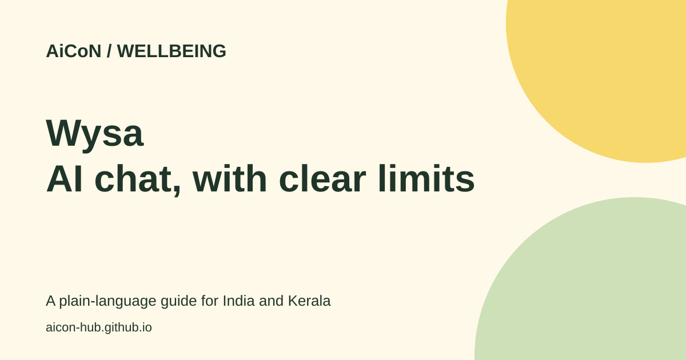

Wysa: free AI wellbeing chat, limits and safe use
Wysa offers an AI chat for reflecting on everyday stress and feelings. The basic AI conversation is free. It is not a doctor, therapist or emergency service.

What is Wysa?
Wysa is a self-help app for emotional wellbeing. You talk to software, not a person. It can suggest reflection, breathing and other self-care exercises. Its FAQ says talking to the AI is free, including tools offered inside conversations.
A paid version adds a wider tool library. Human coaching is a separate option in some locations. An institution, such as an employer or college, may provide access under its own arrangement. These versions can differ.
Who should consider it?
It may suit an adult who wants a small daily space to reflect on ordinary stress. For a student in Kerala, that might mean organising thoughts after a busy day. It should not replace help from a qualified professional when you need that help.
The official individual page says adults 18 and over can use it, while users aged 13 to 17 should read the terms with a parent or guardian. The FAQ also discusses younger users in approved institutional versions. Do not treat those special arrangements as permission for any child to sign up. Check the current terms for your version.
How to start safely
- Open Wysa's official site and use its download links. Check the publisher before installing an app.
- Read the privacy policy and terms. Check the age rules and whether you are using a personal or institution-provided version.
- Start with a simple topic, such as how your day felt. Avoid sharing passwords, financial details or private information about other people.
- Try a short exercise if it suits you. Skip anything uncomfortable and seek human advice if symptoms persist or worsen.
- Check whether a screen is free or asks for payment before accepting it. Read the local price, renewal period and cancellation instructions.
- If you use it through an employer or college, read that version's privacy details. The FAQ says some population-level trend data may be shared with the organisation.
Cost and India availability
| Free | AI chat and tools offered within that chat, according to Wysa's FAQ. |
|---|---|
| Paid | A larger self-care library. Human coaching can cost extra and is offered only in some locations. |
| INR price | A current Indian subscription or coaching price was not confirmed. Check the app's purchase screen, including renewal terms, rather than relying on an old price. |
| Access | Wysa's FAQ describes Android, iOS and web versions. This review did not confirm every version's Indian access, coaching coverage or Malayalam support. |
Important safety limits
Wysa says it does not provide medical advice or diagnoses. It is not recommended for crises or severe, enduring mental health problems. An SOS feature may point to resources, but that does not make the chatbot an emergency service.
If you or someone else is in immediate danger, seek urgent local medical or emergency help. Do not wait for an AI chat to decide what to do. If you already receive care, discuss new self-help routines with your healthcare professional when needed.
The earlier post's free-chat claim is supported. The age rules need more care than a short post can show: personal and institution-provided versions differ. Wysa's privacy and safety statements are vendor claims, not an independent privacy audit or a promise of treatment.
Frequently asked questions
Is Wysa completely free?
No. The AI chat is free, but a larger tool library and some human support are paid.
Am I speaking to a therapist?
Not in the AI chat. Human coaching, where offered, is a separate service.
Can it diagnose depression or anxiety?
No. Wysa says it does not give diagnoses or medical advice.
Does it work in Malayalam?
Malayalam support was not confirmed. Check the current app before relying on it for that language.
Can a school-age child use it?
Check the version's terms with a parent or guardian. Special institutional age rules do not apply automatically to a personal account.
Sources: Wysa for individuals · Wysa FAQ. Checked 6 October 2026.